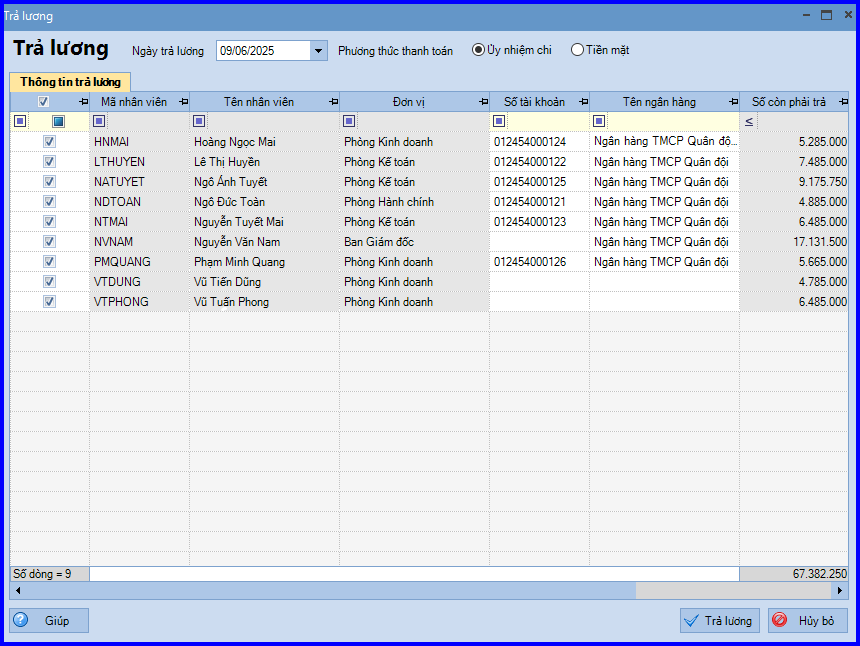
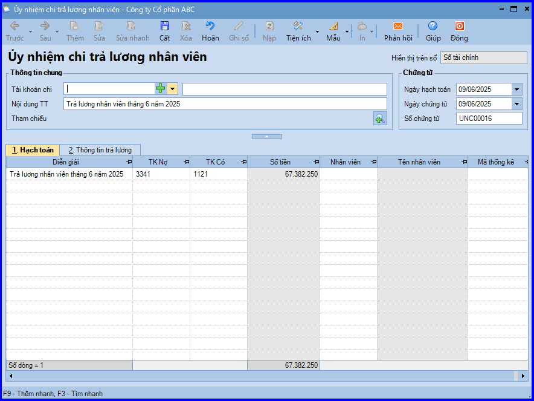

Hướng dẫn cách hạch toán ghi sổ nghiệp vụ trả lương bằng tiền gửi ngân hàng trên phần mềm Misa
Hàng tháng, căn cứ vào Bảng lương đã được duyệt, bộ phận nhân sự sẽ gửi yêu cầu chuyển khoản trả lương tới bộ phận kế toán. Khi đó sẽ phát sinh các hoạt động:
- Kế toán thanh toán lập Séc hoặc Ủy nhiệm chi, sau đó chuyển cho Kế toán trưởng và Giám đốc ký duyệt.
- Nhân sự tiền lương mang Ủy nhiệm chi và danh sách tiền lương cần chuyển của nhân viên ra ngân hàng để đề nghị chuyển khoản.
- Ngân hàng căn cứ vào Ủy nhiệm chi sẽ chuyển tiền vào tài khoản của từng nhân viên, đồng thời lập giấy báo Nợ.
- Căn cứ vào giấy báo Nợ của ngân hàng, kế toán thanh toán sẽ hạch toán, đồng thời ghi sổ tiền gửi ngân hàng.
1. Cách định khoản hạch toán trả lương bằng tiền gửi ngân hàng:
Nợ TK 334 - Phải trả người lao động (3341, 3348)
Có TK 112 - Tiền gửi ngân hàng (1121, 1122)
2. Các bước hạch toán ghi sổ nghiệp vụ trả lương bằng tiền gửi ngân hàng trên phần mềm Misa
2.1. Trường hợp 1: Doanh nghiệp không thực hiện tính lương trực tiếp trên phần mềm Misa mà thực hiện riêng, độc lập trên file Excel:
Thì khi ghi sổ nghiệp vụ trả lương bằng tiền mặt sẽ thực hiện tại: phân hệ "Ngân hàng/ Chi tiền".
2.2. Trường hợp 2: Doanh nghiệp có thực hiện tính lương trên phân hệ tiền lương trên phần mềm Misa:
Thì thực hiện lần lượt các bước như sau:
- Sau khi Lập bảng tính lương, vào phân hệ "Ngân hàng" => chọn tab "Thu, chi tiền".
- Ấn "Thêm\Trả lương".
- Nhập Ngày trả lương.

- Tích chọn xong những nhân viên được trả lương, các bạn ấn "Trả lương" => Phần mềm tự động sinh ra chứng từ Ủy nhiệm chi trả lương nhân viên.
- Kiểm tra chứng từ chi tiền gửi và chọn tài khoản ngân hàng chi tiền.

- Các bạn ấn "Cất".
- Chọn chức năng "In" trên thanh công cụ, sau đó chọn chứng từ chi tiền gửi cần in.
CHÚ Ý: Sau khi hạch toán xong nghiệp vụ trả lương thông qua chuyển khoản ngân hàng, phần mềm tự động chuyển thông tin của chứng từ vào "Sổ tiền gửi ngân hàng".
KẾ TOÁN DIỆU TÂM chúc các bạn làm tốt!
=============================
Nếu bạn muốn thành thạo các kỹ năng làm kế toán trên phần mềm Misa
Thì bạn có thể tham khảo "Khóa Học Thực Hành Kế Toán Trên Phần Mềm Misa" tại Công ty đào tạo Kế Toán Diệu Tâm
Trong khóa học này, bạn sẽ được dạy cách lên sổ sách, lập báo cáo tài chính trên phần mềm Misa
Chi tiết về chương trình đào tạo bạn xem tại đây nhé: Khóa học thực hành kế toán trên Misa
=============================
=============================
Nếu bạn muốn thành thạo các kỹ năng làm kế toán trên phần mềm Misa
Thì bạn có thể tham khảo "Khóa Học Thực Hành Kế Toán Trên Phần Mềm Misa" tại Công ty đào tạo Kế Toán Diệu Tâm
Trong khóa học này, bạn sẽ được dạy cách lên sổ sách, lập báo cáo tài chính trên phần mềm Misa
Chi tiết về chương trình đào tạo bạn xem tại đây nhé: Khóa học thực hành kế toán trên Misa
=============================